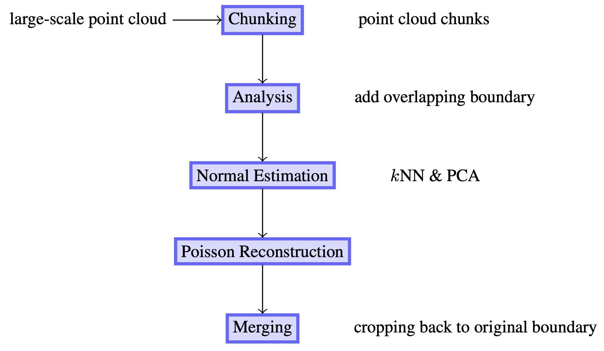
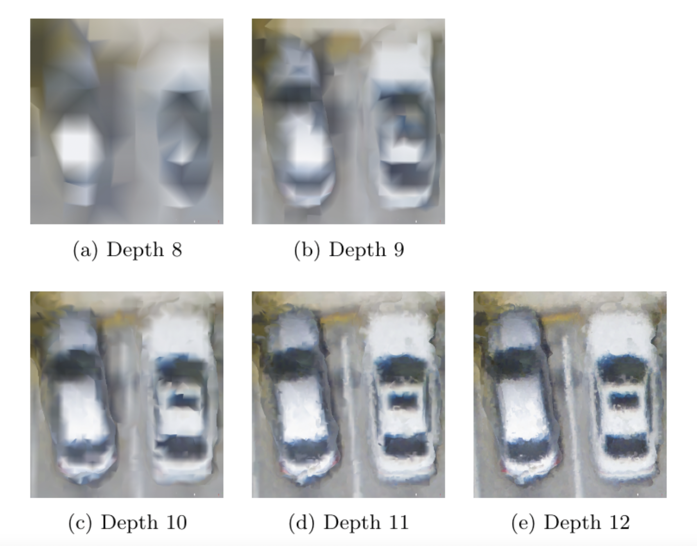

A Pipeline for Distributed High-resolution 3D Reconstruction of Urban Scenes from Point Clouds
May 18 2021 9:45 AM - IEEE STRATUS 2021
Ty Feng - Department of Computer Science - Institute for Data Science and Computing - artyfeng@miami.edu
Amin Sarafraz - Department of Civil, Architectural and Environmental Engineering - Institute for Data Science and Computing
Christopher Mader - Institute for Data Science and Computing
Christopher Mader - Institute for Data Science and Computing
Outline
- Introduction
- Prior Work
- Our Approach
- Implementation
- Results
the problem
Introduction
With the progress in aerial 3D acquisition technologies such as camera drones and aerial LiDAR,
it is now possible to have 3D scans of large urban scenes.
The result of such scans is registered and aligned to the same coordinate system
and then further processed and reconstructed to 3D mesh models. However, processing
and reconstructing gigabytes of large-scale point cloud data with complex real-world geometry is a challenging task.
It requires significant computing powers and memory usage that typical personal computers
cannot afford. Aside from the memory challenges, processing and reconstructing large point clouds
requires significant amount of computing time.
prior work
Existing parallel methods
-
Multiple threads on a single node:
- Can save time but limited by memory capacity of the node
-
Out-of-core methods:
- Can store more data into disk and swap into memory when needed, but time is bottlenecked by computer's I/O speed
- Julie Digne. An Analysis and Implementation of a Parallel Ball Pivoting Algorithm.Image Processing On Line, 4:149–168, 2014
prior work
Surface Reconstruction
- Explicit, geometric reconstruction
- Ball-pivoting algorithm
- Radius selection problem, holes, require uniformly sampled point clouds
- Delaunay-based triangulation
- Provably correct, but require densely-sampled, noise-free point clouds
- Fausto Bernardini, Joshua Mittleman, Holly Rushmeier, Claudio Silva, and Gabriel Taubin. The ball-pivoting algorithm for surface reconstruction. IEEE Transactions on Visualization and Computer Graphics, 5(4):349–359, Oct 1999.
- Frédéric Cazals and Joachim Giese n.Delaunay Triangulation Based Surface Reconstruction, pages 231–276. Springer Berlin Heidelberg, Berlin, Heidelberg, 2006.
prior work
Surface Reconstruction
- Implicit, function-fitting reconstruction
- Poisson Reconstruction
- Fit an implicit function to indicator gradient from oriented points (point + normal)
- Indicator gradient: 0 almost everywhere, 1 at surface; since indicator gradient is equal to inward surface normal (normalized)
- Extract 0-th level isosurface from implicit function using Marching Cubes
- Adaptive octree to represent the implicit function and to solve the Poisson problem. Increasing octree max depth increases mesh resolution (triangles and file size), time, and memory by a factor of 4
- Michael Kazhdan, Matthew Bolitho, and Hugues Hoppe. Poisson surface reconstruction. In Proceedings of the Fourth Eurographics Symposium on Geometry Processing, SGP 06, page 6170, Goslar, DEU, 2006. Eurographics Association.
our method
Our method
Fully independent, distributed, multi-node method
our method
Our reconstruction pipeline

our method
Our reconstruction pipeline
- Chunk Point Clouds
- Chunk point clouds by x and y axes since the range of z values are relatively small in urban scenes
- Compute the axis-aligned bounding box (max and min bounds)
- Compute an x by y grid for point cloud's bounding box
- Crop by x * y bounding boxes
- Adding overlap
- Degraded reconstruction along edges (open shapes)
- Add a 5% overlap before meshing
our method
Our reconstruction pipeline
our method
Our reconstruction pipeline
- Fully-independent, distributed, multi-node processing
- After chunking a point cloud into manageable chunks, we distribute the subsequent processing and meshing of each chunk as an independent process on different nodes on an HPC cluster
- Fully-independent processes because chunking fully separates data; the failure of one process does not have an impact on other processes
- Memory usage is bound by the capacity of a node, but chunking and distributed processing on multiple nodes reduce memory needed for each node
- Each chunk of point cloud is processed and meshed with a single process from start to finish, so it is easier to debug by simply reading the output and error log associated with a particular point cloud chunk
our method
Our reconstruction pipeline
- Normal estimation
- Nearest neighbor search within a search radius and/or k-neighbors
- Principal component analysis (PCA) finds an orthogonal basis that best represents a given neighborhood of points. It finds the best-fitting plane by minimizing the average squared distance from a neighborhood point to the plane
- The normal is a unit vector orthogonal to the plane
- Hugues Hoppe, Tony DeRose, Tom Duchamp, John McDonald, and Werner Stuetzle. Surface reconstruction from unorganized points. SIGGRAPH Comput. Graph.,26(2):7178, July 1992.
our method
Our reconstruction pipeline
- Poisson reconstruction
- Point cloud with normals can be meshed using Poisson Reconstruction with a user-defined octree depth
- Merging
- Using original point cloud bounding boxes, crop the overlapped meshes back
- Add 1% overlap if necessary
our method
Our reconstruction pipeline
- Reconstruction at higher resolution
- We can offset the increased memory usage due to increase in resolution/octree depth by reducing the chunk size.
- Increasing octree depth increases time, memory usage, and number of triangles by roughly a factor of 4.
| Depth | Time | Maximum Memory | Triangles |
|---|---|---|---|
| 8 | 141.46 sec | 243 MB | 202,163 |
| 9 | 234.90 sec | 629 MB | 957,104 |
| 10 | 677.01 sec | 1980 MB | 4,524,372 |
| 11 | 2663.84 sec | 6646 MB | 20,857,780 |
| 12 | 10985.97 sec | 23781 MB | 97,923,718 |
our method

- Comparison of Poisson meshes generated using different octree depth values (Data: cars in a parking lot)
implementation
Implementation
- Chunk point cloud by a x by y grid computed from its bounding box
- Shell commands for each process > shell script
- Submit shell script as a job to LSF job scheduler on cluster
-
Each process does the following for a point cloud chunk:
- Adding a 5% overlap
- kNN and PCA for normal estimation
- Poisson Reconstruction
- Cropping back to original bounding box
- We used Open3D
- Qian-Yi Zhou, Jaesik Park, and Vladlen Koltun. Open3D: A modern library for 3D data processing. arXiv:1801.09847, 2018.
results
Results
| Method | Total time (seconds) | Memory usage per node (GB) |
|---|---|---|
| Single node without chunking | 2233 | 250.341 |
| Our method with 36 chunks (15 nodes) | 955 | 16.972 |
| Our method with 36 chunks (30 nodes) | 904 | 8.185 |
results
Results

- Result of our reconstruction with example data divided into 36 chunks
conclusion
Conclusion
We have shown that large-scale 3D reconstruction can be handled using a distributed method on
computers with memory capacity similar to personal computers’ by first chunking the point cloud
and then processing the chunks on multiple nodes. We have demonstrated that large memory is not required
to process and mesh large-scale point clouds. By addressing the memory issue using our method, we can
also greatly improve the reconstruction resolution using higher octree depth levels.
The resulting mesh is high in resolution and show no negative effects due to open shapes caused by
our chunking process.
credits
Acknowledgments
University of Miami Institute for Data Science and Computing, Advanced Computing
for the use of HPC clusters
for the use of HPC clusters
credits
References
- Julie Digne. An Analysis and Implementation of a Parallel Ball Pivoting Algorithm. Image Processing On Line, 4:149–168, 2014
- Fausto Bernardini, Joshua Mittleman, Holly Rushmeier, Claudio Silva, and Gabriel Taubin. The ball-pivoting algorithm for surface reconstruction. IEEE Transactions on Visualization and Computer Graphics, 5(4):349–359, Oct 1999.
- Frédéric Cazals and Joachim Giese n.Delaunay Triangulation Based Surface Reconstruction, pages 231–276. Springer Berlin Heidelberg, Berlin, Heidelberg, 2006.
- Michael Kazhdan, Matthew Bolitho, and Hugues Hoppe. Poisson surface reconstruction. In Proceedings of the Fourth Eurographics Symposium on Geometry Processing, SGP 06, page 6170, Goslar, DEU, 2006. Eurographics Association.
credits
References
- William E. Lorensen and Harvey E. Cline. Marching cubes: A high resolution 3d surface construction algorithm. In Proceedings of the 14th Annual Conference on Computer Graphics and Interactive Techniques, SIGGRAPH 87, page 163169, New York, NY, USA, 1987. Association for Computing Machinery.
- Hugues Hoppe, Tony DeRose, Tom Duchamp, John McDonald, and Werner Stuetzle. Surface reconstruction from unorganized points. SIGGRAPH Comput. Graph.,26(2):7178, July 1992.
- Qian-Yi Zhou, Jaesik Park, and Vladlen Koltun. Open3D: A modern library for 3D data processing. arXiv:1801.09847, 2018.
- Michael Kazhdan. Adaptive multigrid solvers (version 13.00), June 2020.
- Video credit: Timothy Norris (University of Miami, Tiling the MagicVerse)
thanks
Thank you
Slides available on https://ytyfeng.github.io/Distributed_Recon/